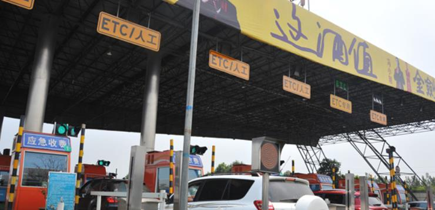

我省ETC全国联网并开通运行
来源：中国交通新闻网

全省交通运输系统在ETC车道系统建设、客服网点拓展、发展ETC用户和加强后期服务等方面，打出“组合拳”，
打赢“攻坚战”，在短短9个多月的时间里，实现了ETC开通运行和全国联网“两大跨越”
7月28日，交通运输部召开全国ETC联网第二批入网视频会商会，副部长冯正霖出席并宣布四川、
吉林、重庆、云南四省（市）高速公路ETC实现全国联网并开通运行。至此，全国已有22个省（市）
高速公路ETC实行了联网运行。目前，我省高速公路与相邻的4个省（市）12座省界收费站（即：达万、邻垫、达渝、
、遂渝、成渝、泸渝、内宜、攀田、达陕、广陕、成自泸泸赤段高速公路四川收费站）
实现了ETC联网，高速公路互联互通能力进一步增强，群众出行更加方便快捷。
在全国ETC联网第二批入网视频会商会上，彭琳介绍，去年以来，
全省交通运输系统把ETC工作作为重要的民生工程，加强组织领导，细化工作方案
，建立协调机制，全力以赴抓好车道建设、用户发展、系统升级、联网测试等工作。
短短9个月时间，从无到有，四川高速公路ETC建设工作呈现出“三个加速”的显著特点：
一是ETC车道加速建设。建成开通ETC专用车道784条、混合车道198条，实现ETC车辆在全省高速
公路所有收费站不刷卡通行。二是ETC客服网点加速发展。建成开通ETC客服网点695个，
覆盖已通高速公路的所有县级以上城市。三是ETC用户加速增长。引入竞争机制，
降低安装成本，办理业务量以每天4000个以上的速度快速增长，
全省用户总数突破75万，ETC车辆日均通行量超过20万辆次、日均交易额超过400万元。